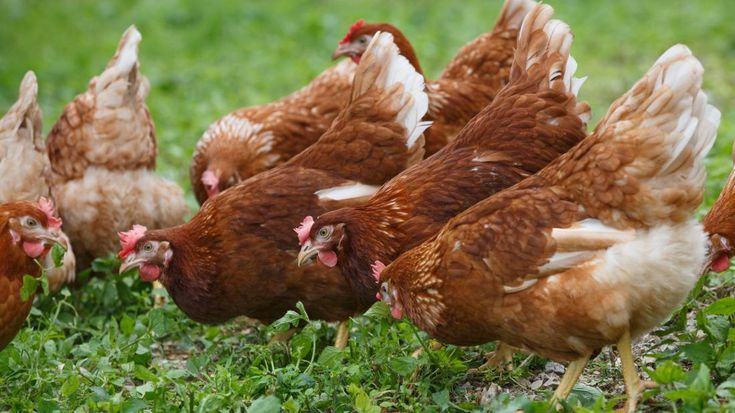

Developed a machine learning model to classify diseases in chickens using convolutional neural networks (CNNs). The project includes data preprocessing, model training, and deployment. Technologies used: Python, TensorFlow, AWS EC2, ECR, Docker, GitHub Actions.

This project provides a complete guide for text summarization, including environment setup and AWS deployment. It demonstrates creating a Conda environment, installing dependencies, and running the application. It also covers deploying the app on AWS, including creating an IAM user, building and pushing a Docker image to ECR, and launching an EC2 instance.

Utilized skills in strategy, project planning, data understanding, modeling, analysis, storytelling, data visualization, presentations, communication, and public speaking in a comprehensive project to deliver impactful results.